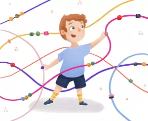

THE M-CHAT-R™ SURVEY
The M-CHAT-R™ survey has demonstrative predictive power and is not designed to detect all possible developmental disorders.
The Modified Checklist for Autism in Toddlers (M-CHAT; Robins, Fein, & Barton, 1999a) is a screening measure developed to identify young children with an elevated risk for autism spectrum disorder (ASD) through parent report. This instrument is one of the most commonly used screening instruments for ASD in toddlers worldwide.
Instructions for Taking the
M-CHAT-R™ autism test
The M-CHAT-R-F™️ is a developmental screening tool to assess the
risk of Autism Spectrum Disorder (ASD) for toddlers between the ages
of 16 and 30 months of age.Please answer these questions about your
child. Keep in mind how your child usually behaves. If you have seen
your child do the behavior a few times, but he or she does not
usually do it, then please answer no. Please circle yes or no for
every question. Thank you very much.
Privacy Policy *
I accept Bloom Buddy’s
Privacy Policy
.
Please, tell us a bit about yourself
1. Does your child enjoy being swung, bounced on your knee,
etc.?
2. Does your child take an interest in other children?
3. Does your child like climbing on things such as up stairs?
4. Does your child enjoy playing peek-a-boo/hide-and-seek?
5. Does your child ever pretend, for example, to talk on the
phone or take care of a doll or pretend other things?
6. Does your child ever use his/her index finger to point, to
ask for something?
7. Does your child ever use his/her index finger to point, to
indicate interest in something?
8. Can your child play properly with small toys (eg. cars or
blocks) without just mouthing, fiddling or dropping them?
9. Does your child ever bring objects over to you (parent) to
show you something?
10. Does your child look you in the eye for more than a second
or two?
11. Does your child ever seem oversensitive to noise? (eg.
plugging ears)
12. Does your child smile in response to your face or your
smile?
13. Does your child imitate you? (e.g., you make a face, will
your child imitate you?
14. Does your child respond to his/her name when you call?
15. If you point at a toy across the room, will your child look
at it?
16. Does your child walk?
17. Does your child look at things you are looking at?
18. Does your child make unusual finger movements near his/her
face?
19. Does your child try to attract your attention to his/her own
activity?
20. Have you ever wondered if your child is deaf?
21. Does your child understand what people say?
22. Does your child sometimes stare at nothing or wander with no
purpose?
23. Does your child look at your face to check your reaction
when faced with something unfamiliar?
RESULT:
LOW RISK
(M-CHAT-R-SCORE:0-2)
Your child’s M-CHAT-R-F™️ score indicates a low risk for Autism
Spectrum Disorder. If your child is younger than 24 months, screen
again after second birthday or at future well-child visits. No
further action required unless surveillance indicates risk for ASD.
You may book an appointment to
see a Specialist
if you still have any cause for concerns
© 2009 Diana Robins, Deborah Fein & Marianne Barton
RESULT:
MEDIUM RISK
(M-CHAT-R-SCORE:3-6)
Your child’s M-CHAT-R-F™️ score indicates a medium risk for Autism
Spectrum Disorder. A follow-up or second stage of screening is
required (second stage of M-CHAT-R/F) to get additional
information about at-risk responses.
Based on the result of your child’s M-CHAT-R-F score, we recommend that you seek further diagostic evaluation and eligibility evaluation for early intervention. You may book an appointment to see a Specialist if you still have any cause for concerns © 2009 Diana Robins, Deborah Fein & Marianne Barton